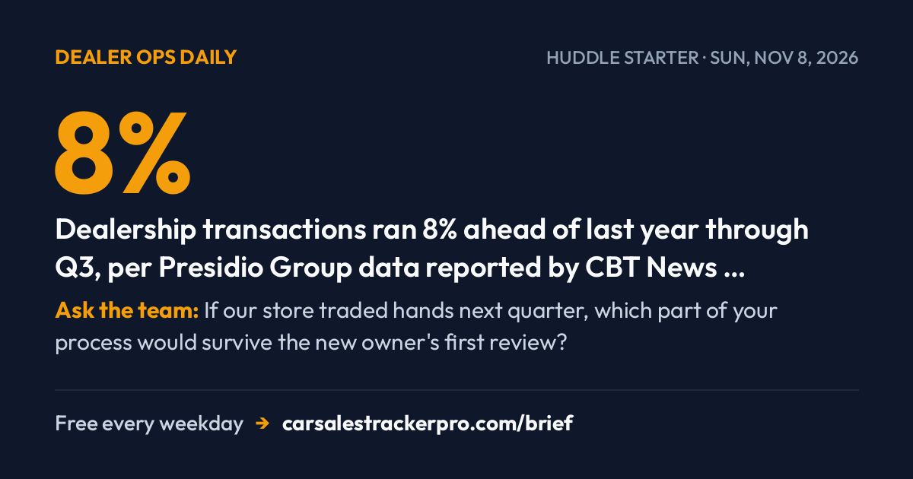

The Week Ownership, Data, And AI All Moved At Once


Three different storylines ran this week — dealership M&A at a record clip, a nine-figure connected-car data settlement, and AI creeping from the showroom floor into the back office. The pattern that emerged: the things changing fastest aren't on the lot, they're in the paperwork and the plumbing behind it. Here's the long view before Monday.
☕ HUDDLE STARTER · read it aloud in 60 seconds
8% — Dealership transactions ran 8% ahead of last year through Q3, per Presidio Group data reported by CBT News — record M&A means pay plans and reporting lines can move faster than inventory does.
Ask the team: If our store traded hands next quarter, which part of your process would survive the new owner's first review?
• Top-Stories
Buy-Sell Market Keeps Running Hot — On The Ground And On Wall Street
Dealership transactions ran 8% ahead of last year through the first nine months of 2026, with more stores — luxury especially — coming to market, according to Presidio Group data reported by CBT News (Nov. 4). That tracks what F&I and Showroom (Nov. 2) called a deluge of buy-sell activity, including an Iowa group and a single-point store trading hands in the same week. Two sources, one arc: the consolidation wave that defined this year hasn't slowed into Q4.
Use it today: If ownership talk is in the air at your store, ask your GM this week where your role lands on the org chart post-sale — and if you're building toward a desk or GM seat, pull the F&I and Showroom report to see what multiples are landing in your region.
Sources: CBT News · F&I and Showroom (FI Magazine)
GM's $220M Data Settlement Puts Delivery Under A Microscope
General Motors agreed to pay $220 million to settle claims it sold OnStar-derived driver behavior data to insurers without clear consent, according to court documents filed by the Texas Attorney General and reported by CBT News (Nov. 4); not independently verified by a second outlet. The data reportedly tied braking and acceleration patterns to individual VINs. The longer arc matters more than the dollar figure: the consent moment everyone is now asking about happens at your delivery desk, on a tablet, in about nine seconds.
Use it today: Before your next delivery, read the connected-services opt-in out loud instead of pointing at the screen — it takes thirty seconds and it's the only record that the customer actually heard it.
Sources: CBT News
AI Moved Behind The Desk This Week, Not In Front Of It
Three separate reports pointed the same direction. Digital Dealer (Nov. 5) reported shoppers are asking AI assistants for a short list of dealers before they ever hit a website or submit a lead; AutoSuccess (Nov. 4) reported oversight of AI-driven credit decisions is shifting from regulators onto dealers and lenders themselves; and AutoSuccess (Nov. 3) reported F&I trainer Josh Danielson sees the near-term AI opportunity as coaching managers on menu presentation and compliance language rather than talking to customers. The through-line: AI stopped being a chatbot story this week and became a lead-source, audit-trail, and training story.
Use it today: Ask two questions Monday — whether your credit-decision tool keeps an audit log you could hand a regulator today, and whether your last five ups used an AI assistant to research dealers before they called.
Sources: Digital Dealer · AutoSuccess · AutoSuccess
• Data-Recap
The Week In Numbers
8% — the year-over-year increase in dealership transactions through Q3, per Presidio Group data reported by CBT News (Nov. 4). Record M&A years change pay plans and reporting lines faster than they change inventory.
+9.8% — used EV price growth year-over-year as of September, nearly double the hybrid pace, according to Car Dealership Guy News (Nov. 1); not independently verified by a second outlet. If you're holding used EVs, this is the week to check your aging report before you discount on reflex.
$220 million — GM's data settlement figure, per CBT News (Nov. 4). Put it next to the consent screen your customers tap through at delivery.
-16% — Volvo's global sales decline from August through October, citing weak U.S. and China demand, according to Automotive Dive (Nov. 5). Soft factory volume tends to show up in used values a couple of quarters later, so re-appraise Volvo trades against today's wholesale, not last quarter's.
106,000 — hybrid Land Cruisers Toyota is recalling over a fuel-line clip that can disconnect near an ignition source, per Automotive Dive (Nov. 4) citing the NHTSA filing. No confirmed fires; owners are being told to park outside until repaired. Run your lot's VINs before the next test drive.
Use it today: Pick one number that touches your inventory — the EV figure or the Volvo figure — and walk it to the desk Monday with a specific unit attached.
Sources: CBT News · Car Dealership Guy News · CBT News · Automotive Dive · Automotive Dive
• Watch-Next-Week
What To Watch Next Week
The Chinese-vehicle ban in Congress. An industry trade group is pushing Congress to make the current ban permanent before the session ends in December, with a Senate committee reviewing the measure now, according to CBT News (Nov. 3). Nothing has passed. Watch for committee movement, and keep your answer to customers factual: it's under review, not decided.
Year-end lease incentives after VW's pullback. Volkswagen is ending its sign-then-drive promotion to close out 2026 and dealers are pushing back, according to Automotive News (Nov. 3). Watch whether a replacement December program lands — and whether competing brands fill the $0-due-at-signing gap in your market.
Sonic's EchoPark ad launch. Sonic Automotive plans $5 million to $7 million in Q4 brand-awareness spend for EchoPark, according to Automotive Dive (Nov. 5). If you compete near one, expect no-haggle questions at the door once the campaign hits.
Use it today: Pick the one that touches your brand and bring it to Monday's huddle with a scripted answer, not a shrug.
Sources: CBT News · Automotive News · Automotive Dive
• Tool-Of-Week
Tool of the Week — CarSales Tracker Pro (Sponsored)
A week this heavy on M&A and back-office change is a week worth having your own numbers in your own hands. CarSales Tracker Pro is the iOS app for tracking every deal, commission, and spiff, so you know your real number before payroll does. Built by the team behind this newsletter.
Use it today: Log this week's deliveries before Monday so your month-to-date figure is yours, not a guess.
Sources: CarSales Tracker Pro
🛠️ Tool of the day (Sponsored)
Week skewed heavily to store-ops and F&I — buy-sell churn, pay-plan exposure, and back-office payment/AP changes — which maps to the app's store-ops, commissions, and tracking tags.
If one person on your floor would get something out of this week's recap, forward it to them before Monday's huddle.
Commission calculator
Estimate this month's check from units, gross, pack and minis.
ComparisonPay plan comparison
Put two plans side by side under the same month.
Free trackerTrack every deal
Log each car and watch your month-to-date pay climb.